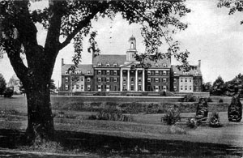
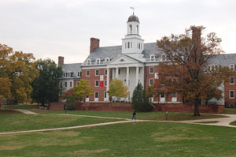

Campus DormitoriesOn November 29, 1912, the day before Thanksgiving, a fire swept through the College Park campus of what was then the Maryland Agricultural College, which would later become Maryland State College and finally the University of Maryland. The blaze consumed most of the buildings on campus, including all of the dormitories and the majority of the classrooms. Many feared it was the end of the college, but the great fire cleared the way for new growth and change. One of the most notable changes was the admission of female students. The first women, Elizabeth Hook and Charlotte Vaux were admitted to Maryland State College in the fall of 1916. 1918 was the year that Chun-Jun C. Chen, the first Chinese student, joined the campus. In 1920 Maryland State College became part of the University of Maryland and the student body included more than 24 women. By 1945, two residence facilities, Margaret Brent Hall and Anne Arundel Hall housed 228 women and nine separate buildings accommodated 860 men. |
Click "Play" button to view |
|
|  |  |
Are you visiting campus? Right-click to download the audio |
The dormitories of the University of Maryland at College Park would not see their first black student, however, until 1951 when Hiram T. Whittle was admitted to the university after he brought a law suit against the school of engineering, which had sought to bar him because of his race. Once admitted, Whittle's application for a place in the residence halls was only granted after a University official upon consultation with the Maryland Attorney General was informed that the school's regulations must be applied equally to all students regardless of their race. Hagerstown Hall, previously an all women's dormitory became the first co-educational residence hall at College Park in 1969. The upper six floors were approved by university president Wilson H. Elkins as an experimental living and learning residence unit, with men living on one side of the hall and women on the other. According to a May 22, 1969 article in the Washington Post by Eric Wentworth, "University authorities made it quite clear, however, that Hagerstown Hall - heretofore a womens' dormitory---will hardly become a 'Huggerstown Hall' Hippy commune with males and females intermingling at all hours." Today, of the 36 on-campus residences, only one, Cecil Hall, is not coeducational. |
||